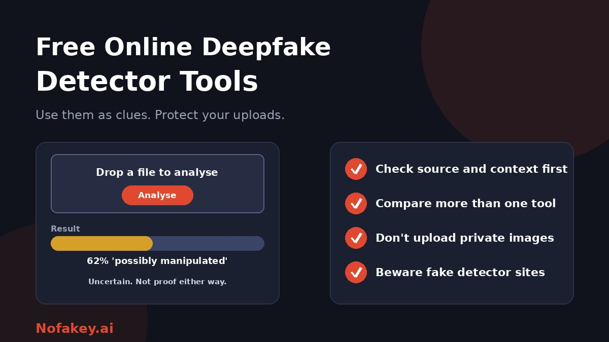

You have a suspicious clip or photo and a search for a free online deepfake detector gives you dozens of sites. Each promises a quick answer: real or fake. Some can help. Many are unreliable, and a few are worse than useless. This guide explains what free detectors actually do, how to read their results, how to test them, and how to stay safe while you use them.
What a free deepfake detector actually does
You upload or link a file, the tool runs it through one or more AI models, and it returns a score or label such as "likely authentic" or "possible manipulation." What it is really doing is estimating whether the file shows statistical traces associated with synthetic media. It is not checking whether the event happened, whether the caption is true or who made the file.
Kinds of free tools you will find
| Kind | What it offers | Typical catch |
|---|---|---|
| Research and open projects | Upload a photo, video or audio file and get results from several models | Slow queues, uncertain results, and designed for experts |
| Vendor "free tiers" | A limited number of free scans per day or month | Limits, sign-ups, and marketing for paid plans |
| Single-purpose detectors | Checks only certain things, such as generated faces or images | Silent on other kinds of manipulation |
| Browser extensions | Right-click or in-page checks as you browse | Broad permissions, and some are malicious |
| Social and platform labels | Labels or notes added by platforms | Incomplete and not always correct |
Features, limits and prices change often, so check each tool's own pages before relying on any claim you read, including in this article.
What free detectors cannot do
- They cannot prove anything. A result is an estimate, and different tools can give opposite answers for the same file.
- They struggle with compressed and re-uploaded files. Social media shrinks and re-encodes video, which hides or mimics the traces detectors look for.
- They lag behind new generators. A tool trained on older fakes can miss newer ones.
- They can flag real content. Independent testing of AI-detection tools has found that they sometimes mislabel authentic material as fake.
- They tell you nothing about context. Real footage with a false caption passes a detector but still misleads.
- "High accuracy" claims usually come from the vendor's own tests, on data that may not look like your file.
For the bigger picture, see are AI detectors accurate?
How to read a result
| What the tool says | What it really means | What to do next |
|---|---|---|
| "Likely fake" or a high score | The file shows patterns the model links to synthetic media | Treat as a warning. Trace the source and look for independent confirmation |
| "Likely real" or a low score | Nothing was flagged, which is not the same as authentic | Do not relax. Still check source and context |
| "Uncertain" or a middle score | The tool could not tell | Rely on source and context checks, and try another method |
| An error or "cannot analyse" | File too short, too compressed, or unsupported | Find a better quality original if possible |
| Different tools disagree | Each model is trained differently | Do not pick the answer you prefer. Dig deeper |
How to judge a free tool before you trust it
- Read what it claims to analyse. Images, video, audio or faces only? Does it say what it cannot do?
- Test it on files you know. Use a few genuine photos and videos of your own, and a few examples you know are synthetic, and see what it says.
- Check consistency. Upload the same file twice, then a re-saved or slightly cropped version. Scores should not swing wildly.
- Prefer tools that explain results, for example by marking regions or giving a confidence level and caveats.
- Check limits and requirements. File size, daily caps, sign-ups and whether the free version actually gives results.
- Read the privacy policy. Does it store uploads, share them or use them to train models? Can you delete them?
- Look for a real publisher. A named organisation, clear contact details and independent coverage are good signs.
Privacy: what you upload matters
- Assume uploads may be stored unless the tool clearly says otherwise.
- Do not upload intimate images, private videos, documents with personal data, or any images of children.
- If the content involves you or someone you know in a harmful way, keep the original, avoid uploading it to random sites, and report it to the platform and to the authorities instead.
- Use public links where possible, rather than uploading private files.
- Remove metadata you do not want shared, such as location, if the tool does not need it.
Beware of fake detectors and risky tools
- Not every "deepfake tool" detects deepfakes. Search results often include apps that create face swaps. Read what a site does before you upload anything.
- Fake detector sites and extensions can harvest data, show scam adverts or install malware.
- Never download and run an installer to "check a video." Real checks do not need it.
- Be wary of "update your detector" pop-ups. See the fake AI browser extension update scam.
- Check extension permissions. A tool that can read every site you visit can see far more than the clip you wanted to check.
- Avoid anything that asks for payment details to reveal a "free" result.
A safe way to use free detectors
- Start with source and context. Who posted it, where did it first appear, and does anyone reliable report the same event? See how to detect deepfake video for beginners.
- Get the best-quality version. A less compressed original gives any tool a better chance.
- Run one or two reputable tools, and note the results and the date.
- Look for provenance information such as content credentials, which can help, but are often stripped. See AI watermark detection.
- Reverse search key frames to find earlier versions. See how journalists verify images.
- Label your conclusion honestly: likely real, likely synthetic, or unverified.
- Do not share unverified media.
When a free tool is not enough
- For news, legal or high-stakes decisions, involve experienced verification teams, forensic experts or your organisation's security team.
- For fraud or threats, keep the original files and report to your bank, the platform and the police or national cybercrime service.
- For video calls, verification should happen through a second channel. See how to verify a person on a video call is real.
- For workplace and brand risks, see brand protection against deepfake impersonation.
If a link or message that came with the media looks suspicious, paste it into our free checker for a quick first read. It is not a deepfake detector, so use it only for the surrounding message, claim or link.
Conclusion
Free online deepfake detectors can be a helpful extra signal, but they are inconsistent and easy to over-trust. Check source and context first, compare more than one tool, test them on files you know, protect your private images, and stay alert to fake detector sites and extensions. When you cannot verify a clip, treat it as unverified. Find more guides on the Nofakey.ai blog.
Frequently asked questions
Are free deepfake detectors accurate?
They vary widely and can be wrong in both directions. Independent testing has found AI detection tools can mislabel real content as fake and miss real fakes, so treat any result as a clue.
Is it safe to upload a video or photo to a free deepfake detector?
Only if you accept the privacy risk. Free tools may store or analyse uploads. Avoid uploading private, intimate or children’s images, and read the tool’s data policy first.
Why do two deepfake detectors give different results?
Each tool uses different models, training data and thresholds, and each handles compression and editing differently. Disagreement is a reason to rely on source and context checks.
Can a deepfake detector prove a video is fake?
No. A detector gives an estimate. A reliable conclusion comes from combining it with source tracing, context checks and, where it matters, expert review.
How can I avoid fake deepfake detector sites?
Be wary of unknown sites and extensions, and of ‘deepfake tools’ that actually create face swaps. Check the publisher, privacy policy and permissions, install extensions only from official stores, and never download an installer to run a check.
Got a suspicious link or message to check?
Run it through the checker